Section 1Foundations
- 01AI in everyday life
- 02Predictive vs. generative
- 03Language models & LLMs
- 04Tokens & tokenization
We will move from familiar AI examples to the machinery behind language models—and finish with the judgment needed to use them well.
You may have used AI before arriving here—perhaps in a phone camera, a route suggestion, a video feed, or a game. Most AI does not look like a robot. It quietly helps software recognize patterns and make choices.
Apps compare your behavior with patterns to suggest music, videos, products, or posts.
Systems identify patterns in faces, voices, handwriting, and objects.
Models estimate traffic, weather, travel time, or the next word you may type.
Generative systems produce new text, images, audio, video, and code.
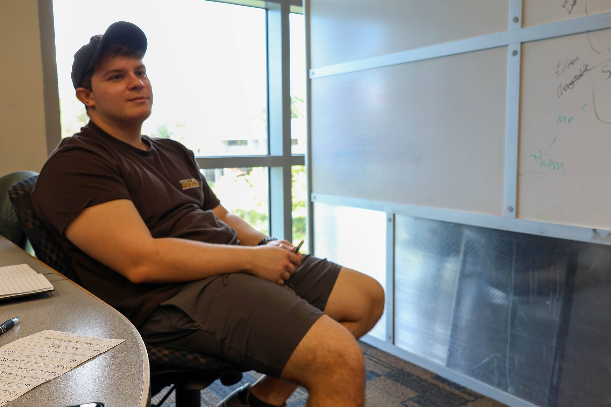
AI supports people; people still set the goal.Those tasks can look very different: recognizing an object, choosing a route, translating language, or generating a story. The system does not need to imitate a person. It only needs a method that performs the task.
Artificial intelligence is the broad field. Machine learning finds patterns in examples. Generative AI uses those learned patterns to create new content.
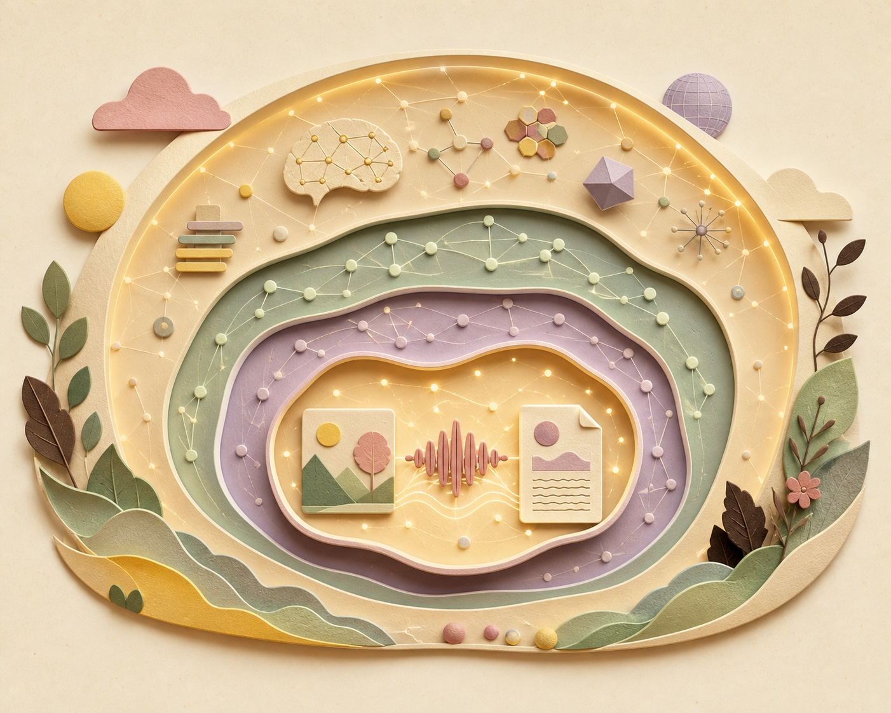
Each inner idea is part of a larger one.It can draft a story, design an image, compose audio, or suggest code. “New” does not mean created from nothing. The model combines and extends patterns learned from many earlier examples.
Today we begin with the first two. Later sections will complete the loop.
Models learn from many pieces of data.
Text is divided into small units.
Relationships help guide predictions.
Possible next tokens get different chances.
One choice at a time becomes a response.
Some models choose among known outcomes. Others create new content. Let’s learn how to tell them apart.
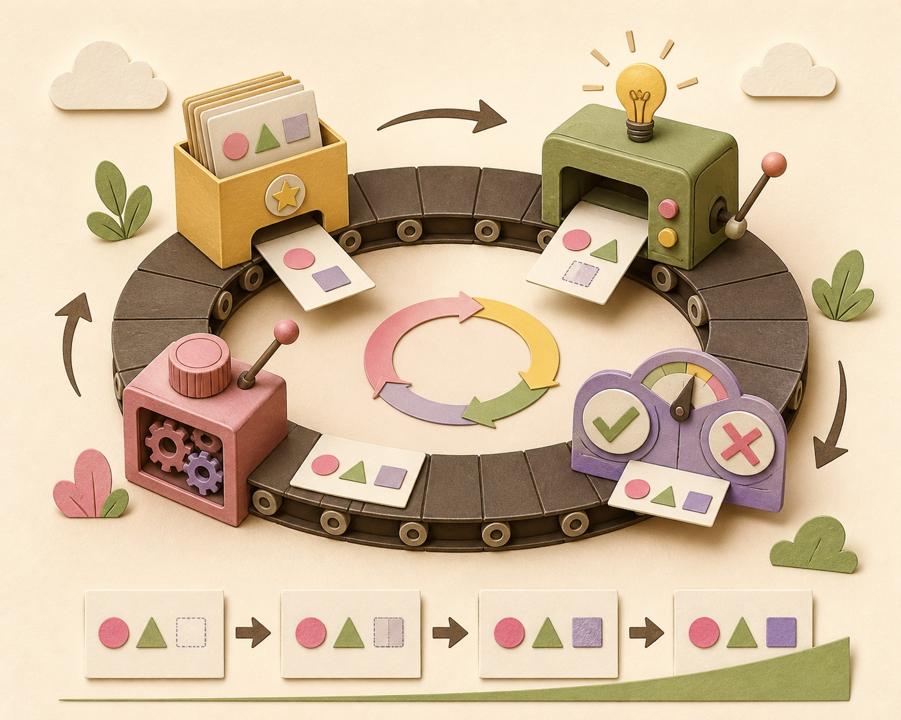
Learning happens through many small adjustments.Examples enter the system. It predicts, compares the result with what actually happened, and adjusts its internal patterns. Repeating the loop makes future outputs more useful.
Those patterns can help it classify, estimate, recommend, or generate something new. The quality of its examples strongly influences what it learns.
A predictive model usually returns a category, a score, a number, or a ranked option. Its answer comes from a defined set or range.
The output belongs to a known kind of answer.
The model examines patterns in the wording, sender, links, and structure. It compares this message with examples seen during training.
The result is one label selected from a known set. The model is making a prediction, not writing a new email.
The input is a grid of pixels, not a written description. Learned patterns help the model notice features such as eyes, ears, fur, and shape. It compares possible labels and returns the category it considers most likely.
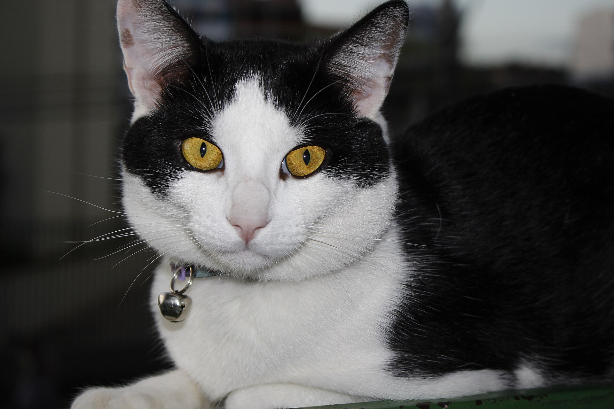
The photograph is the model’s input.A generative model produces content that did not exist in exactly that form before. The output can still resemble patterns found in its training examples.
A predictive model selects, scores, or estimates from a known answer space. A generative model assembles a new example such as a reply, image, or story.
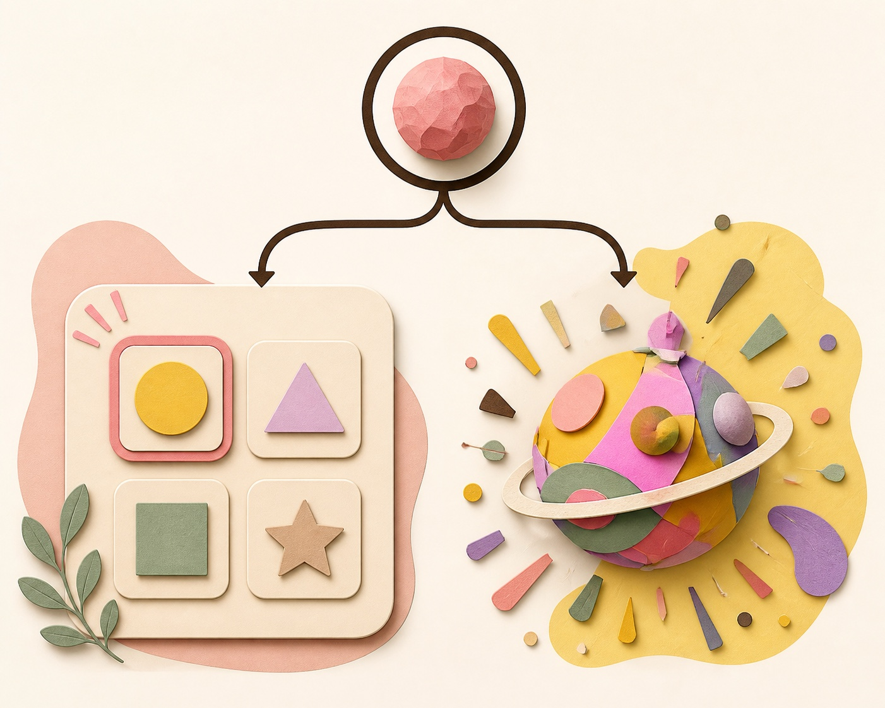
The requested output determines the kind of model task.Forecast tomorrow’s temperature · Write a poem about rain · Detect a face · Create a movie poster
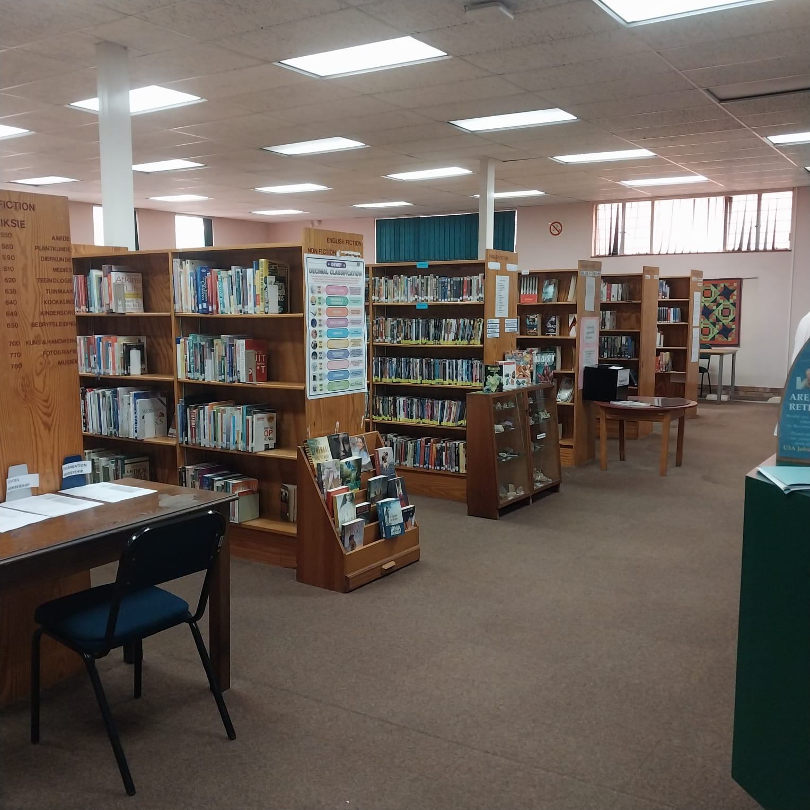
Books contain countless examples of how language works. A language model learns from large collections of text, noticing which words and phrases tend to appear together.
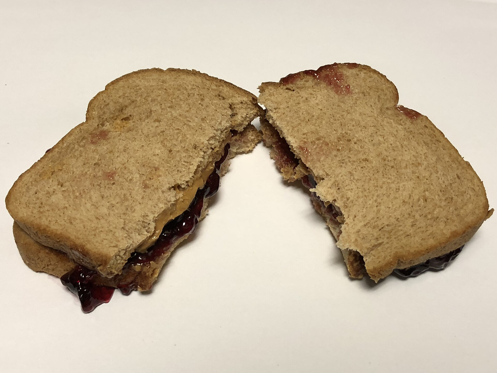
A familiar pair creates a strong expectation.Many English speakers quickly imagine the word “jelly.” That is not because only one answer is grammatically possible. It is because experience makes some word combinations feel much more likely than others.
Word order shapes grammar. Familiar word pairs create expectations. Earlier sentences change what makes sense next. A language model learns many of these regularities from examples.
It estimates what token is likely to come next, adds one token, and repeats. Many small predictions can grow into a sentence, paragraph, or conversation.
 Generation grows from left to right, one step at a time.
Generation grows from left to right, one step at a time.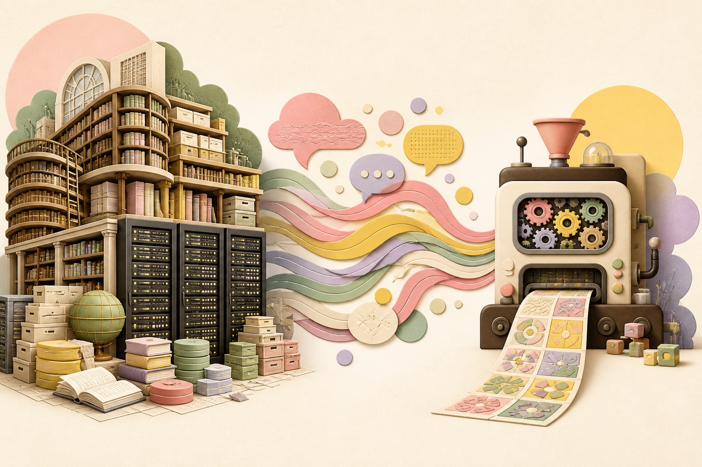
Large refers to scale—not perfect knowledge.Large means many learned parameters and substantial training. Language means sequences such as text and code. A model turns input into a learned output.
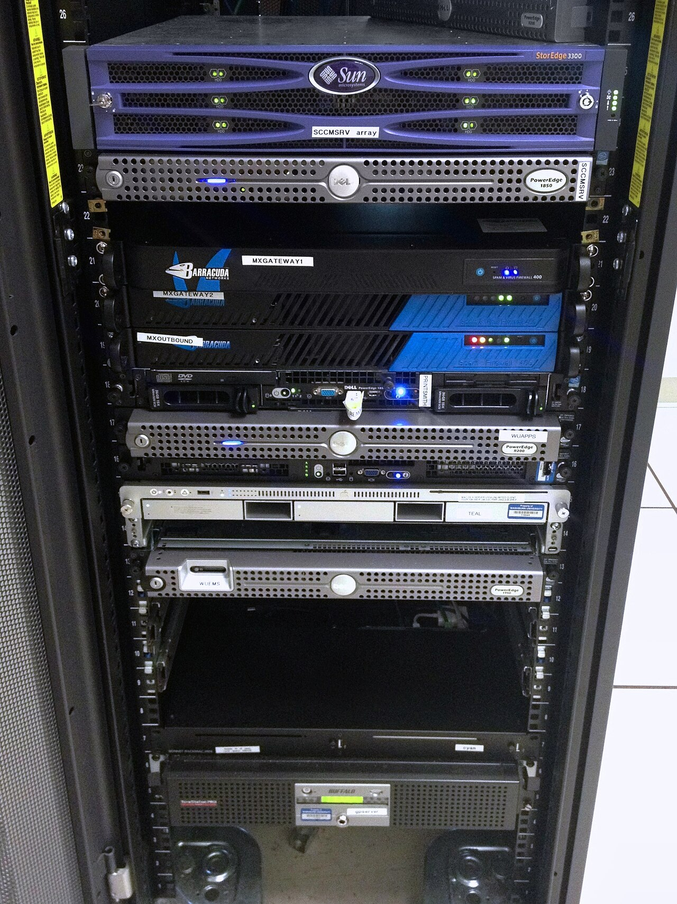
Training large models requires substantial computing power.Modern LLMs contain many adjustable values called parameters and learn from enormous collections of text. More scale can improve flexibility across subjects and writing styles. However, a larger model is not automatically truthful, fair, or wise.
Turn a difficult idea into simpler language.
Summarize, translate, rewrite, or change tone.
Draft stories, dialogue, plans, and code.
Brainstorm, compare options, and answer questions.
A database can return an intact stored record. An LLM assembles a response from learned probability patterns. That flexibility is useful—but it also means fluent answers can contain errors.
A person sees words, punctuation, and meaning. A language model first needs smaller units that can be mapped to numbers. This conversion step is called tokenization, and it happens before the model begins predicting.
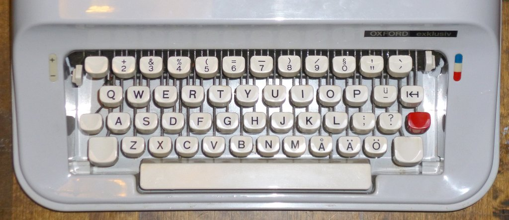
Writing systems have always turned ideas into symbols.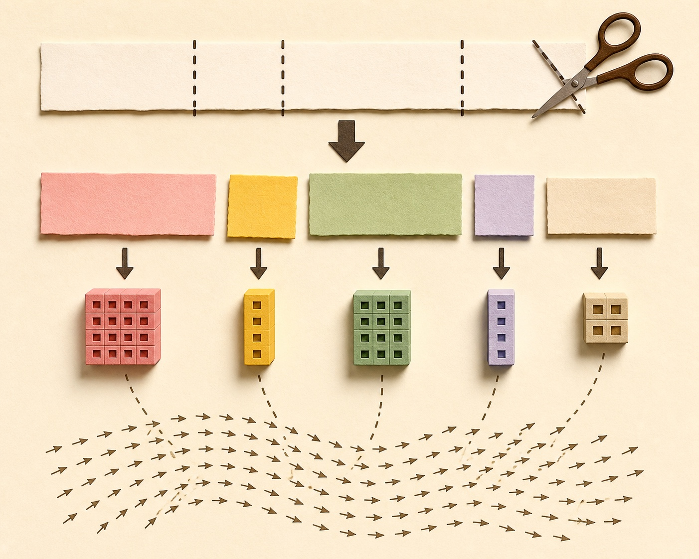
Readable text becomes model-ready pieces and identifiers.A tokenizer divides text into pieces. Each piece receives an identifier, which the model converts into a numerical representation it can process.
It may be a word, part of a word, punctuation, a number, or another symbol. Tokens give the model a consistent set of units to process.
A familiar word may stay whole. A longer word can split into subword pieces. Punctuation and numbers may form their own tokens—or several tokens.
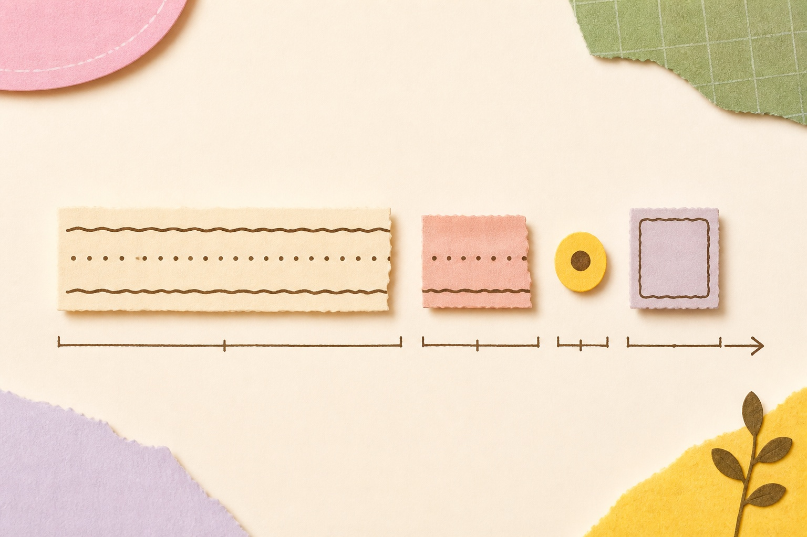
Token boundaries depend on the tokenizer.Original textThe robot writes a story.
Tokenized textSix possible pieces
Next stepMap each piece to a number
The model can reuse familiar pieces inside longer words. The exact split depends on the tokenizer it uses.
A tiny symbol can change how a sentence should be interpreted. Punctuation therefore carries useful information for prediction.
There may be more than one reasonable answer. Be ready to explain your choices.
We will follow one token from a prompt to a prediction, explore why probability creates variety, and meet the Transformer idea that helps a model use context.
An LLM creates text by repeatedly asking a small question: “Given everything so far, what token is likely to come next?”
The model reads the tokens already present, scores possible continuations, selects one, and adds it to the sequence. Then the same small process begins again.

You probably thought of “blue.” That answer is not guaranteed, but it is common because those words often appear together. An LLM learns similar patterns from enormous amounts of text.
Near river, it may mean land beside water. Near money, it may mean a financial institution. Surrounding tokens steer both meaning and likely continuations.
Ball, cat, and stick might all fit. The model gives every candidate a score based on the prompt and learned language patterns.
A lower-probability path may still be selected.
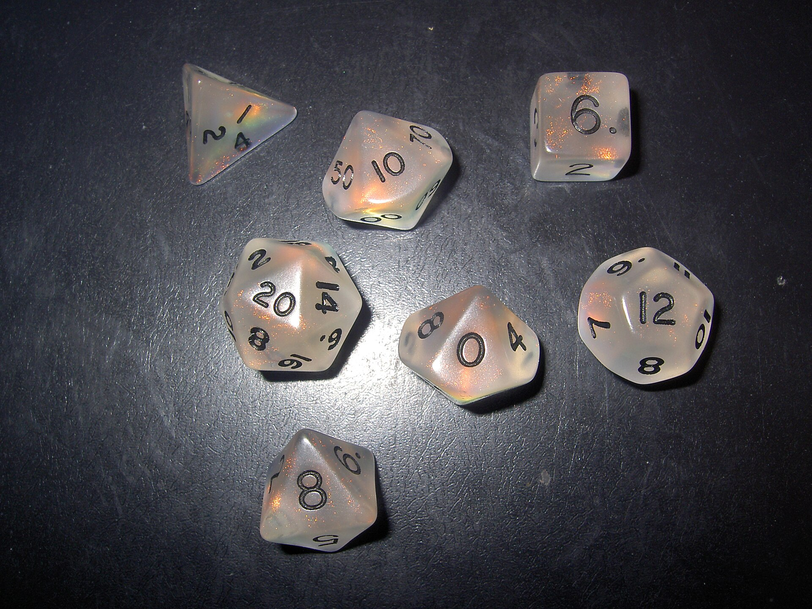
Probability is a way to describe uncertainty. A fair die gives each side a one-in-six chance. An LLM gives possible next tokens different chances because some fit the context better than others.
All probabilities together add up to 100%.
Select the highest-probability option every time. This is steady and predictable, but it may become repetitive.
Give likely options more chances while still allowing alternatives. This creates variety without choosing words completely at random.
Take in the prompt and all tokens generated so far.
Estimate probabilities for possible next tokens.
Choose one token using the current settings.
Add the token to the context and begin again.
Everyone writes one likely next word. We collect the answers, build a class probability distribution, then choose one word and continue the story.
Generation settings influence whether an answer feels safe and focused—or surprising and adventurous.
One response may stay close to familiar patterns. Another may choose less expected tokens and become more imaginative. Both remain connected to the prompt.
Each next-token choice changes what becomes likely afterward.
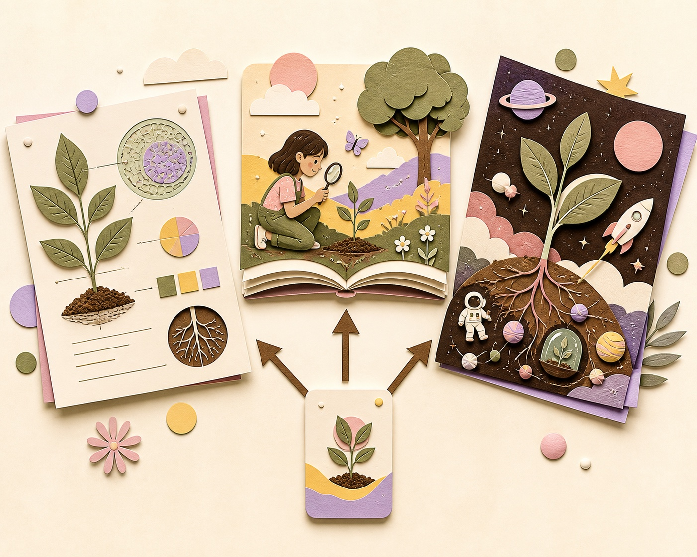
Always choosing the top token keeps generation focused, but it can reuse familiar phrases and avoid interesting alternatives. Useful generation often needs controlled variation.
Imagine a bag containing many word tickets. Common candidates appear on more tickets; unusual candidates appear on fewer. Drawing one ticket creates variation while respecting the model’s probability estimates.
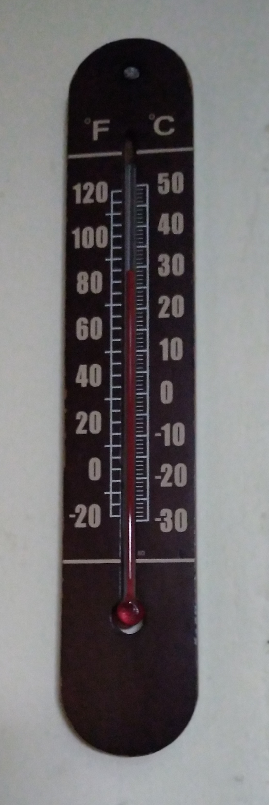
Lower temperature concentrates attention on the most likely tokens. Higher temperature gives less likely choices more opportunity to appear.
Lower temperature emphasizes the highest-probability choices. Use it when clarity, consistency, formatting, or precise instructions matter more than surprise.
The model stays near familiar, likely continuations.
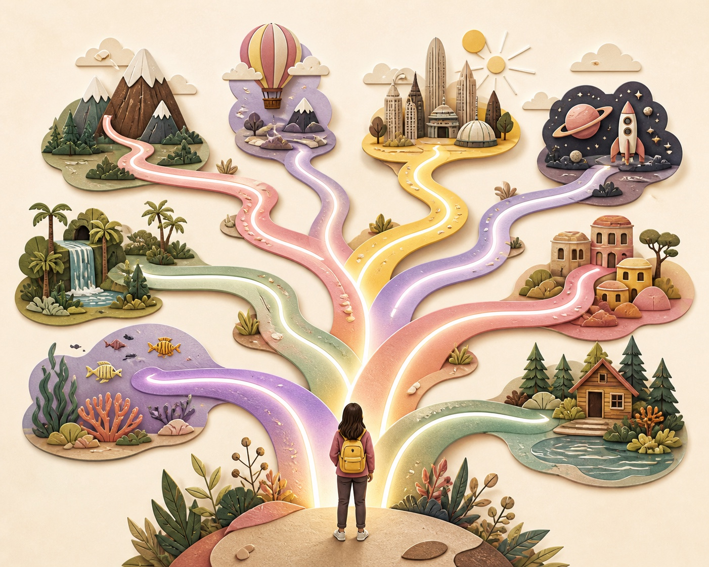
Higher temperature can support brainstorming, playful stories, and many alternatives. More variety can also produce strange, irrelevant, or incorrect turns.
Creative range grows together with unpredictability.
Compare a focused, balanced, and adventurous continuation. Do not ask only “Which is best?” Ask “Best for what purpose?”
The Transformer architecture helps a language model compare words across the context and decide which relationships matter for the next prediction.
A flying animal? A piece of sports equipment? Without surrounding words, we cannot know. Context supplies the clues that make language meaningful.
“We sat on the bank and watched the water.” Nearby words point toward land beside a river.
“She deposited money at the bank.” Nearby words point toward a financial institution.
What does “it” refer to? The sentence structure and meaning suggest the trophy.
The model can give more weight to useful earlier tokens when building a representation of the current word.
Introduced in 2017, the Transformer became the foundation for many modern LLMs. Its key idea is attention: compare tokens and decide which connections are useful.
For each token, the model gives different weights to other tokens in the available context. Stronger connections contribute more to the token’s current representation.
The pattern changes for each token and each context.
If the question is about yesterday’s experiment, you focus on classmates who mention the experiment. Attention similarly gives different amounts of weight to different tokens.
These weights are illustrative. The key idea is simple: the model gives more influence to tokens that are useful for the current prediction.
Track subjects, objects, and pronouns.
Notice local word and punctuation patterns.
Connect words with linked meanings.
Pick up clues about style and intent.
This is a teaching map, not a complete engineering blueprint.
Each token begins as numbers that also include position information.
Mix information from relevant tokens in the context.
Process and refine each updated token representation.
The final representation becomes scores for possible next tokens.
Each layer repeats two broad moves: share useful context through attention, then refine the result. Stacking layers builds richer representations.
The user provides words and instructions.
→Text becomes model-readable pieces.
→Each token becomes a set of numbers.
→Useful relationships receive weight.
→The model scores possible next tokens.
→One token joins the context; the loop continues.
An LLM generates by selecting one next token, then repeating the process.
Possible continuations have different likelihoods; settings influence selection.
A Transformer uses weighted connections to build context-aware representations.
We will explore how training data shapes an LLM, why fluent answers can still fail, and how thoughtful humans can use generative AI safely and effectively.
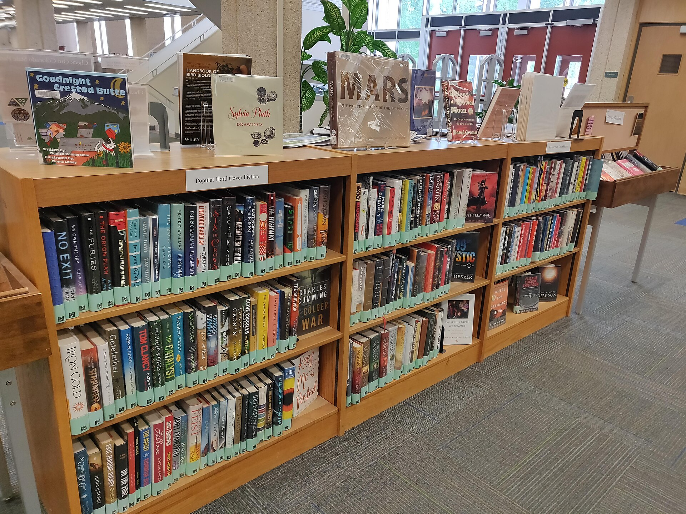
An LLM learns statistical patterns from examples. What appears in those examples—and what is missing—affects what the model can generate.
Training adjusts the model’s internal numbers; it does not store a perfect copy of every page.
Text is converted into token sequences.
The model guesses a missing or next token.
The prediction is measured against the actual token.
Small changes make future predictions a little better.
Different models use different collections and preparation methods. The goal is not simply “more text,” but useful coverage, quality, variety, and appropriate permission.
Stories strengthen narrative patterns. Explanations shape definitions and common facts. Code contributes programming structures. The model learns relationships rather than storing a perfect library of every page.
Repeated phrases and associations may become easier to continue. Rare languages, experiences, or specialist topics can receive weaker coverage.
Widely published languages and popular topics may produce stronger patterns. Local knowledge, minority languages, recent events, and unusual situations may be missing or distorted.
More data is not automatically more representative data.
Some systems can search or use updated tools, but a base model learned from earlier data. For current facts, check a source with a clear and recent date.
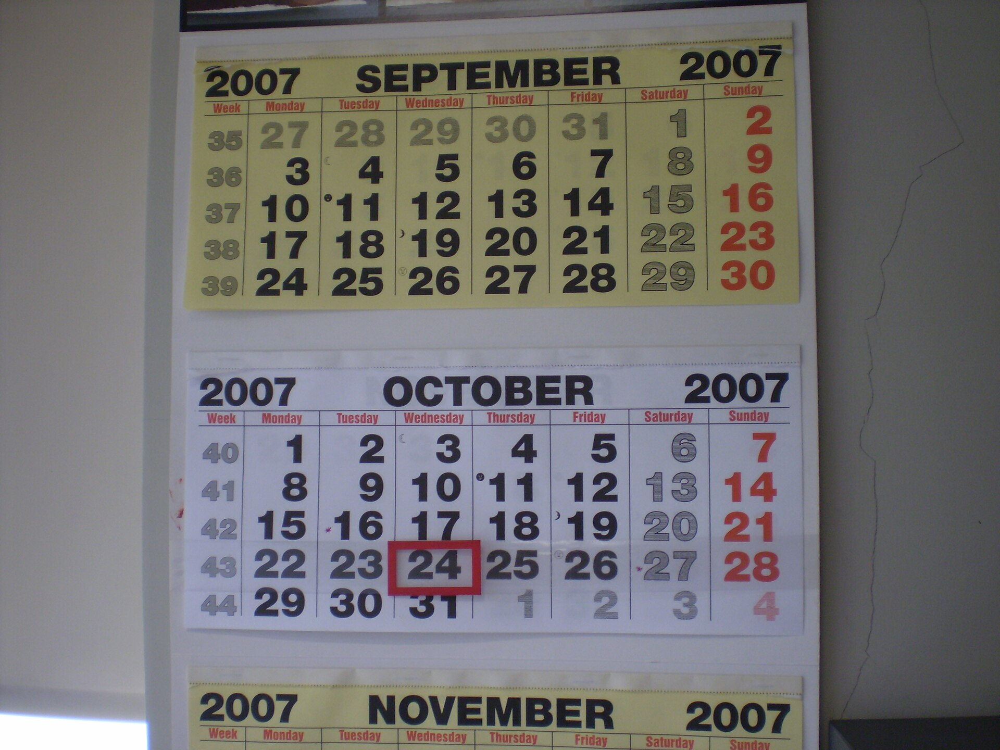
List useful sources, then look for missing cuisines, languages, allergies, budgets, cooking tools, and cultural knowledge. How could each gap affect the answers?
An LLM can produce useful text while also making mistakes, repeating bias, losing context, or sounding more certain than the evidence allows.
Grammar, confidence, and detail can make an answer persuasive. None of them proves that its facts, sources, calculations, or conclusions are correct.
The model may invent a quotation, person, event, citation, or explanation. It is not necessarily “lying”; it is generating a continuation that fits the pattern.
Several factors can combine in one incorrect response.
The prompt strongly suggests that an answer should exist.
The needed fact may be rare, absent, or outdated.
Likely-looking tokens can form a false claim.
Fluent wording can hide uncertainty from the reader.
If examples contain stereotypes or uneven representation, the model may reproduce them. Careful dataset design, testing, safeguards, and human review can reduce harm, but no model is perfectly neutral.
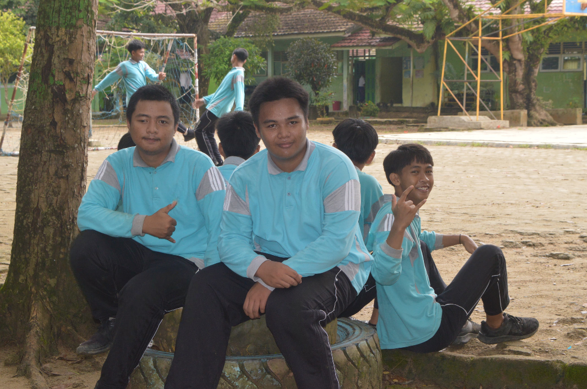
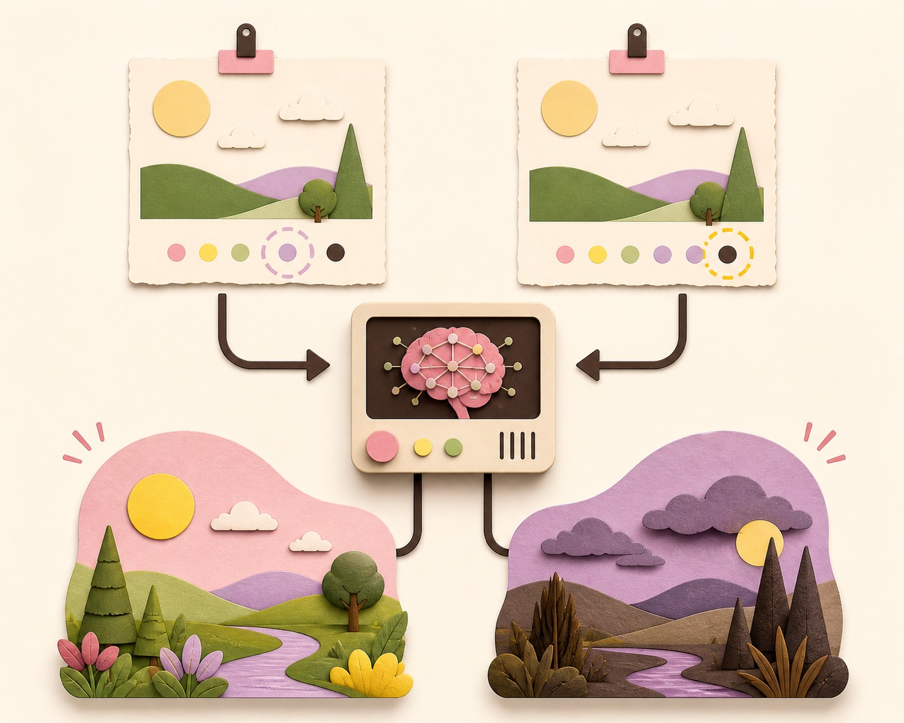
“Explain climate feedback” leaves the audience, scope, and format open. Adding “for a 13-year-old” and “use a thermostat analogy” guides the response toward a more useful result.
Recent tokens remain available for the next prediction. Earlier instructions may fade or fall outside the active window as new content enters.
Extra memory or retrieval tools are separate system features.
An LLM may organize ideas and show plausible steps, then skip a condition or make an arithmetic error.
Use language models for explanation and exploration; use reliable tools to verify exact results.
Follow your school’s rules and the tool’s privacy policy.
A playful story can tolerate invention. Medical, legal, financial, safety, or major school decisions cannot. In high-stakes situations, involve a qualified adult or professional.
No evidence: a strong claim has no source. Fake precision: exact details look suspicious. One-sided view: uncertainty disappears. High stakes: a mistake could harm someone.
The goal is not to trust everything or reject everything. The goal is to use AI with curiosity, verification, privacy, fairness, and human judgment.
Identify statements that can be checked. Cross-check them with reliable, independent, current sources. Then decide whether to keep, revise, or reject the claim.
Important decisions need evidence and human judgment.
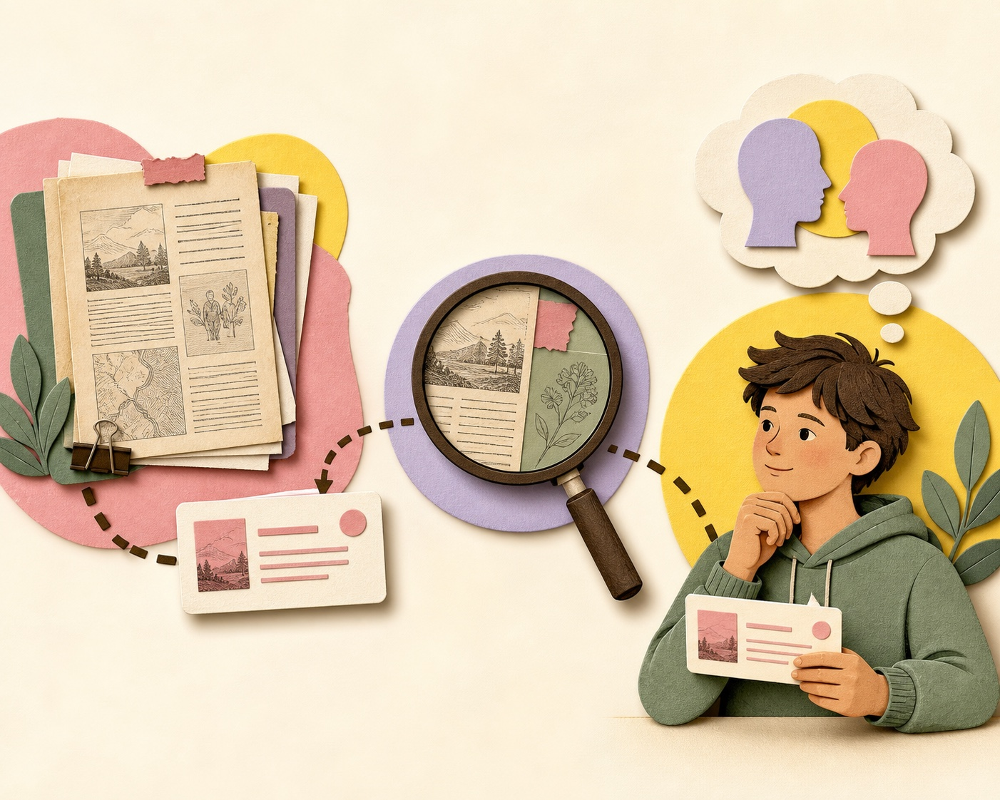
An LLM can invent a title, link, quotation, or page number. Search for the original source and compare what it says with the AI-generated summary.
Ask whether the task needs a real name, face, grade, address, or private story. Often you can replace it with a general description or fictional example.
Brainstorm, explain, compare, and suggest.
Check evidence, protect people, improve the work, and own the outcome.
What should your group do next?
The sentence sounds scientific, so place it directly on the poster.
Request the same answer more confidently and treat repetition as proof.
Check trusted health and science sources, ask the teacher, then revise or remove the claim.
Generative models learn from training examples rather than following one fixed answer table.
LLMs use Transformer attention and probability to generate one token at a time.
Training data and system limits make verification, privacy, fairness, and responsibility essential.
AI can generate possibilities at remarkable speed. Your job is to ask good questions, test important claims, protect people, and choose what deserves your trust.